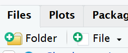

Block 1: Project-based workflows
The single most common reason a shared script fails on someone else’s computer is a file path. A line like read.csv("C:/Users/me/thesis/data/penguins.csv") is a statement about your machine, not about the analysis. The fix is to make the project, not your home directory, the centre of the universe.
Why a project
An RStudio (or Positron) project is a folder with an .Rproj marker file. Opening it does two useful things automatically: it sets the working directory to the project folder, and it points the file browser there. Every path you write can then be relative to the project root, which means the project can be zipped, shared, or moved to another operating system and still run without editing a single path.
To create one: File → New Project → New Directory → New Project, name it, and click Create Project. RStudio leaves an .Rproj file in the folder. Double-clicking that file opens a fresh session pointed at the project.
Absolute versus relative paths
An absolute path spells out the full location from the root of the disk:
/home/your-username/project/data/raw/penguins.csvIt breaks the moment anyone else opens your code, because nobody else has your directory structure. A relative path is relative to the project root, so it travels with the project:
data/raw/penguins.csvA sensible layout
Organise each project into its own folder with a predictable structure. The convention we follow all day:
my-project.Rproj
|- data/
| |- raw/ # read-only; never edited by code
| |- processed/ # outputs of cleaning
|- R/
| |- functions/ # function definitions only
| |- scripts/ # or numbered analysis scripts in R/
|- outputs/
| |- figures/
| |- tables/The principle that does the most work here is raw data is read-only. Cleaning scripts read from data/raw/ and write to data/processed/; they never overwrite the original. If a clean goes wrong, the source of truth is untouched.
Setting up a new project
You should start a new R project when you begin working on a distinct task, research project, or analysis. This ensures that your work is well-organized, and it’s especially beneficial when you need to collaborate, share, or revisit the project later.
Your turn
Set up our first R Project:
The new project will be created with a .Rproj file. You can open it by double-clicking on this file or by using the “File” menu in RStudio.
Warning
It is very important to NEVER to move the .Rproj file, this may prevent your workspace from opening properly.
More on projects can be found in the R4DS book.
Build a Project Structure
Let’s create a clean folder structure - we can do this in several ways:
-
Create the following folders using the + New Folder button in the Files tab
- data/raw
- data/clean
- scripts
- outputs

Warning
R is case-sensitive and whitespace-sensitive so type everything EXACTLY as printed here
Run fs::dir_tree() to generate a nicely formatted directory tree and is a great sanity check before and after file manipulation
The fs Hester et al. (2026) package is a great OS agnostic package and one that works safely (it will not overwrite files or folders unless explicitly asked).
Having these separate subfolders within our project helps keep things tidy, means it’s harder to lose things, and lets you easily tell R exactly where to go to retrieve data.
You might want also want to keep any information (wider reading) you have gathered that is relevant to your project.
The here package
Even inside a project, paths written with / or \\ can behave differently across operating systems, and they break if you run code from a subdirectory. here::here() builds a path from the project root regardless of where the code is called from or which operating system runs it.
here() finds the root by looking for the .Rproj file (or a .here file), so it does not depend on the working directory. We recommend using an RStudio project and here() together. Either alone helps; both together is robust.
Note
Further reading on here: the package’s own rationale at https://github.com/jennybc/here_here sets out the argument better than we can here. The short version: a path is part of your code, and code should not assume it knows where it lives.
Activity: de-path a script
de-path a script
Below is the opening of a script written without a project. Rewrite it so it would run unchanged on a colleague’s machine. You should change two things: the working directory line, and the path.
The setwd() line is deleted entirely, not replaced. Working directory is the project’s job, not the script’s. The path is rebuilt from the project root with here(), so it no longer mentions any user or machine. tidyverse contains the readr package which has read_csv(), so we load it here. We could load readr directly if we wanted, but tidyverse is a common choice for data analysis and it includes readr, so we go with that.
Blank slates
A clean analysis should not depend on hidden state left over from a previous session: a package you attached by hand, an object you created interactively, an option you set and forgot. Many scripts open with rm(list = ls()) in an attempt to start clean, but this is a weak guarantee. It removes user-created objects but does not detach packages, reset options, or change the working directory. The session is still contaminated.
The reliable habit is to restart R (Session → Restart R, or Ctrl/Cmd+Shift+F10) and rerun the script from the top. If the analysis only runs correctly from a fresh session, it is reproducible; if it needs objects that exist only because of something you did by hand earlier, you find out immediately rather than six months later. Treat the script, not the workspace, as the record of what you did.
Tip
Turn off workspace saving so a stale .RData never loads silently. In Tools → Global Options → General, set “Save workspace to .RData on exit” to Never, and untick “Restore .RData into workspace at startup”. Now every session starts blank, and the only way to recreate your objects is to run your code.
renv: pinning package versions
A project that runs today can break next year if a package changes its behaviour. renv records the exact package versions a project uses, in a project-local library, so the environment can be reconstructed later or on another machine.
# Once per project: create a project-local library and record current versions
renv::init()
# Install into the project library (not the global one)
renv::install("dplyr")
# After installing or updating anything, record the new state
renv::snapshot()
# On another machine, or after things break, rebuild the recorded environment
renv::restore()renv::status() reports whether the lockfile and the library agree.
renv.lock records only packages actually loaded in the project, so it captures what you use rather than everything installed.
Note
renv is a large step towards reproducibility, not a complete guarantee. It records, but does not by itself reinstall, the R version you used (though the version is noted in renv.lock). For stronger guarantees, tools such as rig (switching R versions) or Docker (capturing the whole environment) exist, but they are beyond today’s scope. For most analysis projects, a project plus here() plus renv is enough.
Activity: initialise a project environment
initialise a project environment
In a fresh project, run renv::init(), then renv::install("janitor"), then renv::snapshot(). Open renv.lock in a text editor and find the entry for janitor. What information is recorded about it, and why would a collaborator need that exact information to reproduce your analysis?
Note
Where this leaves us. We now have a project that runs anywhere, reads its data by relative path, starts from a blank slate, and pins its package versions. That is the foundation. Everything from here assumes you are working inside such a project. The rest of the day fills it with well-organised analytical code.